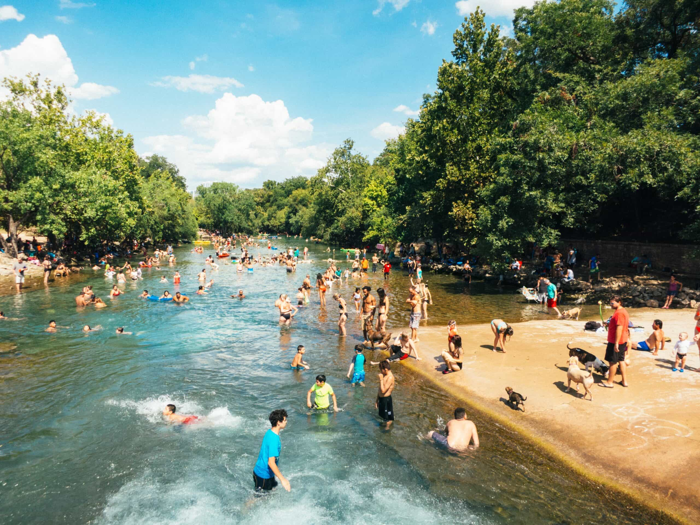

No $$ Required
This month we’re highlighting the Cathedral of Junk which has been a favorite quirky site to explore for visitors and locals alike. The place is built in it’s creator’s backyard and is constantly changing and shifting as he adds and removes elements.
The place was threatened to be shut down by the city numerous times, but is still standing strong. There are no tickets you have to buy, just call, arrange a time, and make a donation to the place if you can.
Sign up for our weekly news letter here

“I don’t recognize the Austin I used to know”
Free Barton Springs
Beloved spring-fed pool maintaining a 68 degree Fahrenheit temperature year-round with lifeguards on duty.
Cathedral of Junk
A whimsical, multilevel shelter made with 60+ tons of used furniture, home goods & other junk.